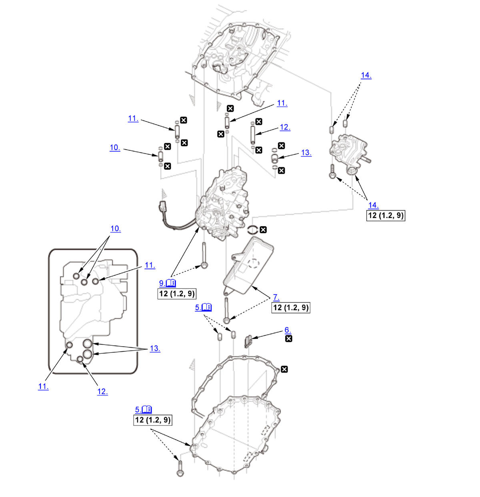

Removal and Installation: Procedure
NOTE:
Numbered call-outs in figure pertain to list numbers in following procedure.
Fig 1: Exploded View Of Transmission Fluid Pump Replacement Components With Torque Specifications (K20C2 - CVT)

Courtesy of HONDA, U.S.A., INC. |
Detailed information, notes and precautions |
 |
Torque: N.m (kgf.m, lbf.ft) |
 |
Replace |
- Vehicle - Lift
- Engine Undercover Plate - Remove
- Engine - Warm Up
1. Start the engine, and warm it up to normal operating temperature (the radiator fan comes on twice). 2. Turn the engine off.
- Transmission Fluid - Drain
- Transmission Fluid Pan - Remove
NOTE: The actual transmission fluid (HCF-2) capacity will vary from the specified capacity based on the length of time the transmission fluid pan is off the transmission. Avoid leaving the transmission fluid pan off for extend periods of time.
- Magnet - Remove
- Transmission Fluid Strainer - Remove
- Transmission Fluid Strainer - Check
1. Clean the inlet opening (A) of the transmission fluid strainer (B) thoroughly with compressed air. 2. Check that it is in good condition and that the inlet opening is not clogged.
3. Test the strainer by pouring clean transmission fluid through the inlet opening, and replace it if it is clogged or damaged.
- Valve Body Assembly - Remove
1. Remove the valve body assembly mounting bolts. Bolt Length A 90 mm (3.54 in) B 65 mm (2.56 in) 2. Remove the valve body assembly (A) straightly and disconnect the connector (B).
NOTE: Be careful not to damage the solenoid wire harness. - 10.9 x 29 mm Pipe - Remove
- 10.9 x 48 mm Pipe - Remove
- 10.9 x 75.5 mm Pipe - Remove
- 18 x 21 mm Pipe - Remove
- Transmission Fluid Pump - Remove
- All Removed Parts - Install
1. Install the parts in the reverse order of removal.
NOTE:- Apply a light coat of clean transmission fluid on all O-rings before installation.
- Be careful not to damage the O-rings.
- Do not pinch the solenoid wire harnesses.
- Check the connector for corrosion, dirt, or oil, and clean or repair if necessary.
- Transmission Fluid - Refill
- TCM - Reset
(Only for Replacing Transmission Fluid Pump and/or Valve Body Assembly)
NOTE: This procedure is not required, if the TCM, and the transmission fluid pump and/or the valve body assembly are replaced simultaneously.